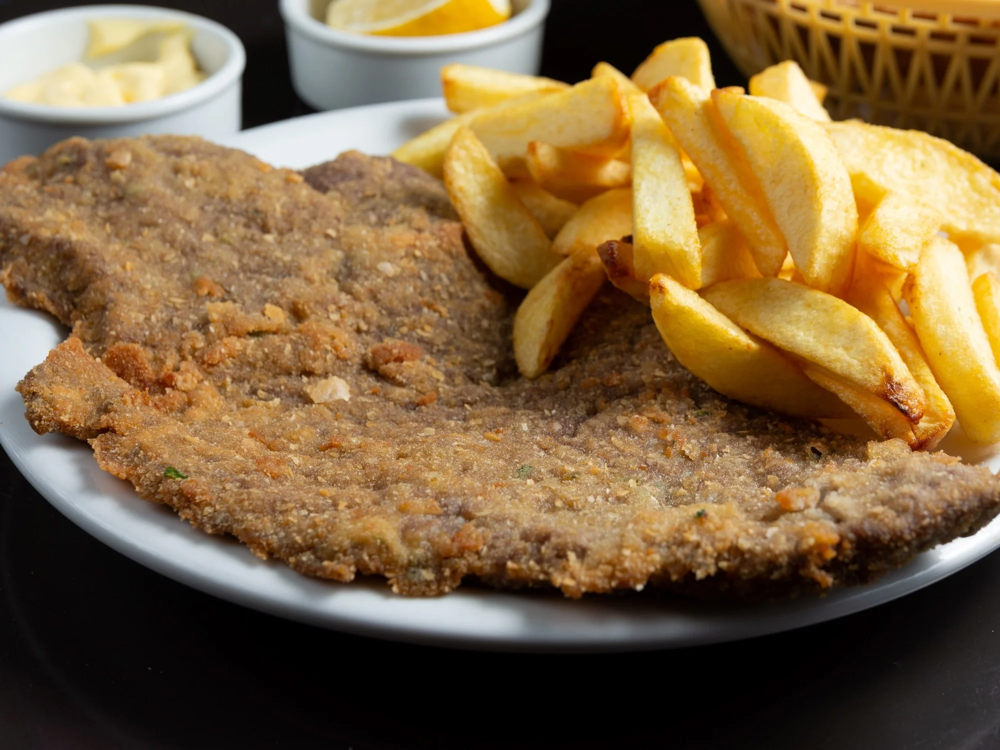

Milanese

Description
There are many ways to make milanesas, but all of them are better if they are left to rest in the egg mixture.
As for the batters, they are much crispier if they are breaded with cereal flakes, polenta or seeds.
It is so popular that it even has its own day.
Ingredients
- 4 eggs
- 2 cloves og garlic
- Chopped parsley
- Salt and pepper to taste
- Bread crumbs
- 1 kilo of buttocks or peceto for Milanese
Steps
- Peel the garlic and chop together with the parsley.
- Place the eggs in a bowl and beat until well dissolved. Then add the parsley, the garlic and season with salt and pepper.
- Place the meat in the previous mixture, leave for a few minutes, remove and pass through breadcrumbs.
- In a frying pan with plenty of hot oil, fry the milanesas. Remove and drain on absorbent paper.